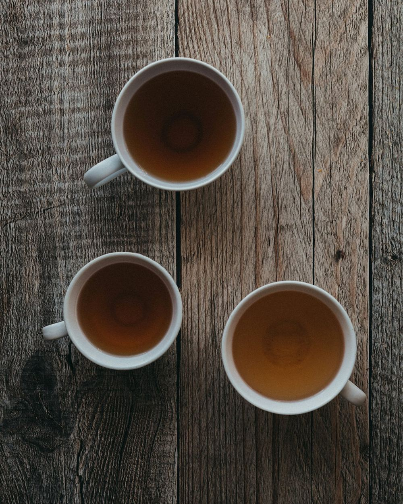

Inre vinter
Menstruation
Ungefär dag 1–5
Östrogen och progesteron är som lägst och kroppen ber om lugn. En tid för vila, reflektion och att lyssna inåt.
- Vila utan dåligt samvete
- Värmande mat och te
- Mjuk rörelse
Kvinnohälsa · Menscykel · Mindfulness
Retreats om menscykeln, hormoner och kvinnokroppen, med gemenskap, vila och god mat.

Vilka vi är
Vi är två vänner som någonstans på vägen hittade vår stora passion: kvinnokroppen och dess fantastiska cykel. Det som började med nyfikenhet, långa samtal och böcker som skickades fram och tillbaka har vuxit till något vi inte kan låta bli att dela med oss av.
Vi tror att alla kvinnor förtjänar att förstå sin kropp, inte kämpa emot den. När vi lär oss lyssna på våra hormoner, vår energi och våra behov genom cykelns olika faser händer något. Vi blir snällare mot oss själva.
Därför skapar vi rum där du får landa, äta gott, röra dig, vila och lära dig mer om dig själv, tillsammans med andra. Varmt, tryggt och utan krav. Välkommen till oss.
Kramar och kärlek, Alva & Siri
Menscykelns fyra faser
Precis som naturen rör sig kroppen genom årstider, varje månad. När du känner igen dem blir det lättare att ge dig själv det du behöver.
Inre vinter
Ungefär dag 1–5
Östrogen och progesteron är som lägst och kroppen ber om lugn. En tid för vila, reflektion och att lyssna inåt.
Inre vår
Ungefär dag 6–13
Östrogenet stiger och med det ofta energin, nyfikenheten och lusten att börja nytt. Ett fint läge att planera och testa.
Inre sommar
Ungefär dag 14–16
Energin toppar för många. Du kanske känner dig mer utåtriktad, social och kommunikativ, redo att ta plats.
Inre höst
Ungefär dag 17–28
Progesteronet tar över och fokus vänds inåt igen. Det blir tydligare vad som inte fungerar, och vad du behöver.
Dagarna är ungefärliga – alla cykler är unika. Det här är inspiration, inte medicinsk rådgivning.
Så arbetar vi
Under våra retreats dyker vi djupare in i oss själva genom en fin blandning av rörelse, stillhet och samtal.
Mjuk, kännande rörelse som hjälper dig att landa i kroppen och släppa spänningar.
Guidade meditationer och stunder av stillhet för att hitta lugnet inombords.
Övningar som riktar uppmärksamheten mot livmodern och bäckenet, kvinnokroppens centrum.
Skrivövningar som hjälper dig att sätta ord på det du känner och vill.
Samtalscirklar där du får dela och bli lyssnad på, utan att någon dömer eller fixar.
Lekfullt skapande med händerna, där det inte finns något rätt eller fel.
Kommande retreats
 Få platser kvar
Få platser kvar
Om 22 dagar
Höstretreat · 2026
En helg fylld med mys, gemenskap, god mat och avslappning för kropp och sinne, och framför allt en helg där vi utforskar kvinnokroppen och vår menscykel på ett djupare plan.
Vi kommer att göra:
Ingår: boende, all mat från fredagsmiddag till söndagslunch, alla pass och material.
Däremellan tar vi hand om dig ♡
Röster från deltagare
Bra att veta
Hittar du inte svaret? Skriv en rad i anmälningsformuläret, så svarar vi dig personligen.
Nej, inte alls. Du behöver inte ha mediterat, skrivit dagbok eller veta något om din cykel sedan tidigare. Kom precis som du är – nyfikenheten räcker långt.
Bekväma kläder att röra dig i, varma lager (oktober i skärgården!), tjocka sockor, en anteckningsbok och det du behöver för att sova gott. En detaljerad packlista skickar vi ut innan helgen.
Yxlan ligger i norra Stockholms skärgård. Dit kommer du med bilfärjan från Furusund, eller med Waxholmsbolagets båtar som lägger till vid flera bryggor på ön. Det går även buss från Norrtälje. Exakt vägbeskrivning skickar vi efter anmälan, och vi hjälper gärna till med samåkning.
Perfekt! Då får du uppleva din inre vinter tillsammans med oss. Allt vi gör kan anpassas efter dagsformen, och det finns alltid plats för vila, värmeflaskor och te.
Absolut. Helgen handlar om att lära känna din kropp, var du än befinner dig. Använder du hormonella preventivmedel, har en oregelbunden cykel eller ingen mens alls är du lika varmt välkommen.
Du anmäler intresse via vårt formulär. Det är inte bindande. Sedan hör vi av oss med mer information och hur du betalar för att säkra din plats.
Välkommen
Anmälan är inte bindande – vi hör av oss med all information.